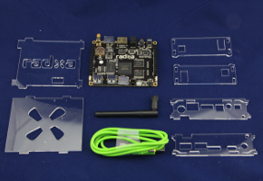

Mini Computer 2GB RAM 8GB

Product Features
Mini computer based on Rockchip RK3188
Product Description
CPU: ARM Cortex-A9 quad core @ 1.6Ghz
Memory: 1GB / 2GB DDR3 @ 800Mhz
Storage: 4GB / 8GB NAND Flash, Micro-SD SDXC up to 128GB
GPU: Mali400-mp4@533Mhz, OpenGL ES 2.0
Digital Video: HDMI 1.4 up to 1080p@60hz
LAN: 10/100M Ethernet port
WiFi: 150Mbps 802.11b/g/n with antenna
Bluetooth: Bluetooth 4.0 (2GB Kit only)
Audio: S/PDIF, headphone jack
USB Host: 2 USB 2.0 standard A type
USB OTG: USB OTG micro-USB connector
Serial: Serial Console for debugging
IR: Support self defined IR remote
Buttons: Power, recovery, reset
LED: 3 programmable LEDs
RTC: Support power off alarm
Extend Header: 80 pins including GPIO, I2C, SPI, Line in, USB 2.0, PWM, ADC, LCD, GPS, plus more
Mini Computer 1GB RAM 4GB
Product Features
Mini computer based on Rockchip RK3188
Product Description
CPU: ARM Cortex-A9 quad core @ 1.6Ghz
Memory: 1GB / 2GB DDR3 @ 800Mhz
Storage: 4GB / 8GB NAND Flash, Micro-SD SDXC up to 128GB
GPU: Mali400-mp4@533Mhz, OpenGL ES 2.0
Digital Video: HDMI 1.4 up to 1080p@60hz
LAN: 10/100M Ethernet port
WiFi: 150Mbps 802.11b/g/n with antenna
Bluetooth: Bluetooth 4.0 (2GB Kit only)
Audio: S/PDIF, headphone jack
USB Host: 2 USB 2.0 standard A type
USB OTG: USB OTG micro-USB connector
Serial: Serial Console for debugging
IR: Support self defined IR remote
Buttons: Power, recovery, reset
LED: 3 programmable LEDs
RTC: Support power off alarm
Extend Header: 80 pins including GPIO, I2C, SPI, Line in, USB 2.0, PWM, ADC, LCD, GPS, plus more
We Provide:
- To be accessible, friendly, and helpful at all times.
- To answer the phone when you call, 24/7/365.
- Reply to your emails and support tickets within 24 hours.
- To provide timely information about new hardware.
- To provide all design documentations.
Please fulfill following request form to get more information!